În stînga este slide-ul din curs, în dreapta aceeași figură sau același tabel, calculat în browser din aceleași date. Butonul ▶ modifică parametrul pas cu pas; tabelele și exemplele lucrate se recalculează odată cu el. Abrevieri: PD (probability of default, probabilitatea de nerambursare), LGD (loss given default, pierderea în caz de nerambursare), EAD (exposure at default, expunerea la nerambursare), EL (expected loss, pierderea așteptată), IRB (internal ratings-based, abordarea bazată pe ratinguri interne), RWA (risk-weighted assets, active ponderate la risc), WoE (weight of evidence), IV (information value), LDA (linear discriminant analysis, analiza discriminantă liniară), ROC (receiver operating characteristic), AUC (area under the curve, aria de sub curba ROC), CAP (cumulative accuracy profile), AR (accuracy ratio, raportul de acuratețe), KS (statistica Kolmogorov–Smirnov), HL (testul Hosmer–Lemeshow), TP, FN, FP, TN (true positive, false negative, false positive, true negative), TPR (true positive rate), FPR (false positive rate), PDO (points to double the odds, punctele care dublează șansa), LR (likelihood ratio, raportul de verosimilitate), CI (confidence interval, interval de încredere), se (eroarea standard), DM (mărci germane), EBIT (profitul înainte de dobînzi și impozite), TA (activele totale), DD (distance to default, distanța pînă la nerambursare), GBM (geometric Brownian motion, mișcarea browniană geometrică).
Scorul de credit: definiție · Datele de nerambursare · Weight of Evidence și Information Value · Regresia logistică · Analiza discriminantă liniară · De la model la scorecard · Validarea · Reject inference și echitatea · Nerambursarea companiilor: Altman și Merton
Scorul de credit: definiție
PD în ani buni și în ani proști: modelul cu un factor
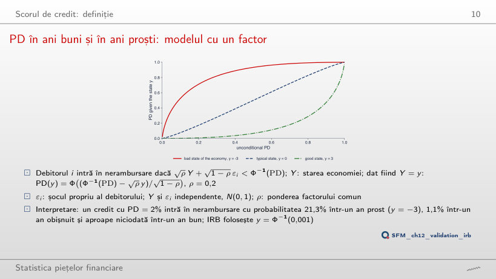
Răspuns
Crește de la 21,3% la 53,8%; într-un an obișnuit (y = 0) scade de la 1,08% la 0,18%. O pondere mai mare a factorului comun concentrează nerambursările în anii proști, iar media peste toți anii rămîne 2%.
Exemplu rezolvat: capitalul IRB al unui credit de retail
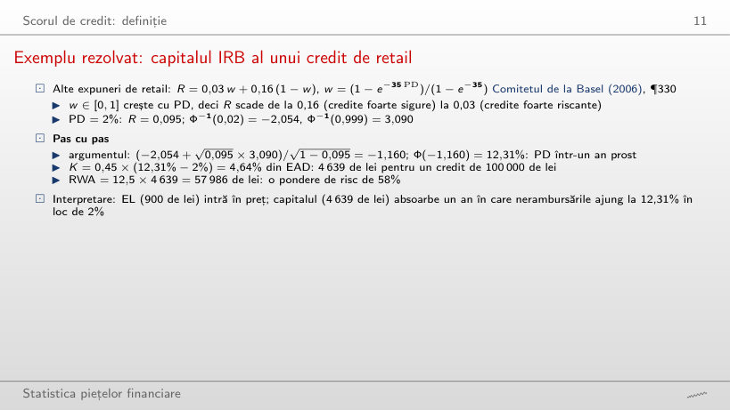
Exemplu lucrat: capitalul IRB, alte expuneri de retail
Răspuns
Nu: crește de la 4,64% la 5,20% din EAD (+12%), în timp ce EL se dublează, de la 0,90% la 1,80%. Corelația R scade de la 0,095 la 0,062 cînd PD crește, iar nerambursările în plus sînt tot mai mult așteptate, nu neașteptate.
Pierderea așteptată și capitalul IRB în funcție de PD
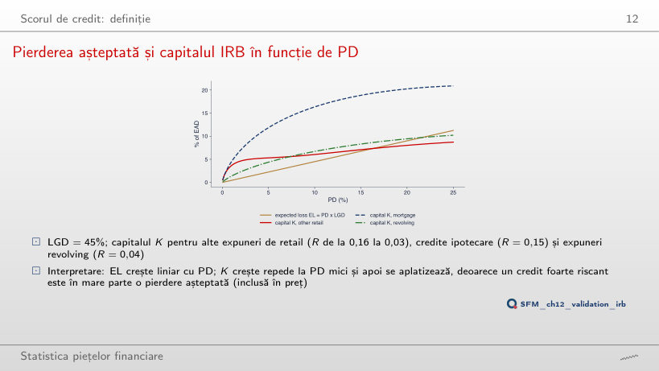
Răspuns
Crește doar de la 5,31% la 6,04% din EAD (+14%). K acoperă pierderea neașteptată: cu cît PD este mai mare, cu atît o parte mai mare din pierdere este așteptată și inclusă în preț, iar R scade de la 0,053 la 0,034. Peste o PD de aproximativ 16%, K este chiar mai mic decît EL.
Datele de nerambursare
Rata creditelor neperformante după contul curent
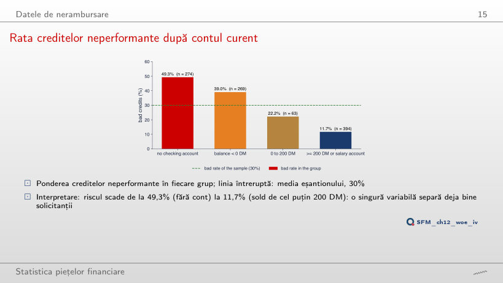
Răspuns
49,3% (274 de credite), grupul cel mai riscant, față de 11,7% pentru un sold de cel puțin 200 DM sau un cont de salariu: un raport de 4,2. Cifrele erau corecte în ambele versiuni; doar etichetele erau inversate.
Weight of Evidence și Information Value
Exemplu rezolvat: WoE și IV pentru contul curent
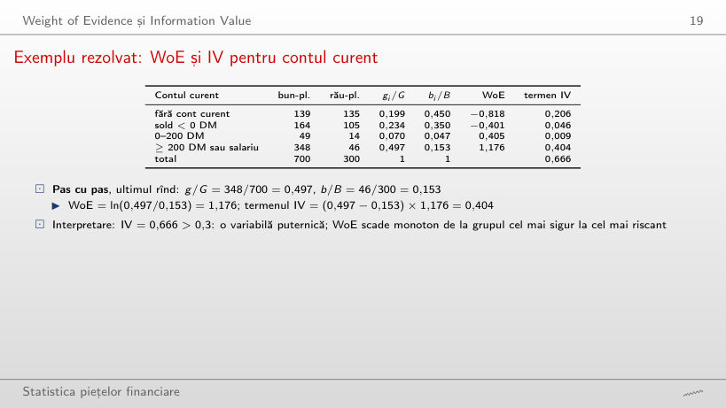
Tabelul WoE pe eșantionul complet
Exemplu lucrat: WoE și termenul IV al unui rînd
Răspuns
ln(0,497/0,153) = 1,176: ponderea bun-platnicilor este de 3,2 ori ponderea rău-platnicilor. Termenul IV, (0,497 − 0,153) × 1,176 = 0,404, este cel mai mare dintre cele patru; IV total este 0,666, o variabilă puternică.
WoE pentru durata creditului
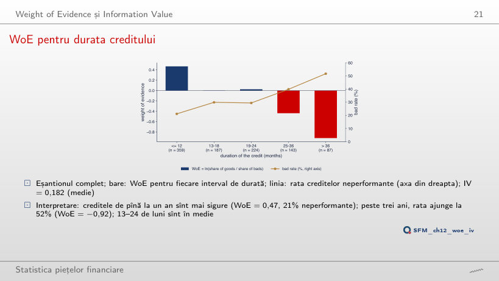
Răspuns
Nu: este 30,9% la creditele cele mai mici, scade la 23,9% la 2001–3000 DM și urcă la 41,5% peste 5000 DM (WoE de la 0,31 la −0,50). Relația are forma unui U, pe care un singur termen liniar într-un logit nu o surprinde, iar intervalele da; IV = 0,082, o variabilă slabă.
Information Value pentru cele 20 de variabile
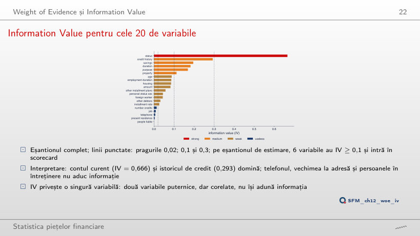
Răspuns
Nu: pe eșantionul de estimare IV este 0,082, iar vechimea la angajator (0,086 pe eșantionul complet, 0,122 pe cel de estimare) îi ia locul. Șase variabile trec pragul în ambele cazuri. IV calculat pe cîteva sute de credite variază cu cîteva sutimi între eșantioane: pe cele 300 de credite de test, IV al contului curent este 0,913, față de 0,666 pe toate cele 1000.
Regresia logistică
Șansa (odds) și logaritmul șansei
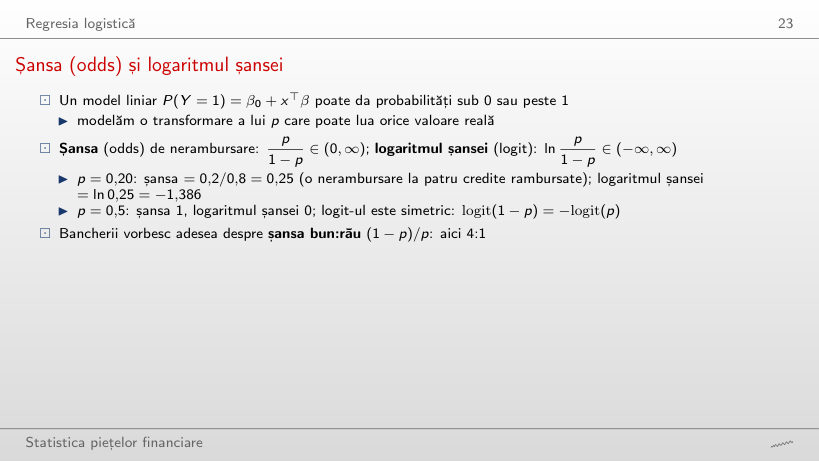
Exemplu lucrat: șansa și logaritmul șansei
Răspuns
+1,386: logit(1 − p) = −logit(p), logit-ul este simetric față de p = 0,5. Șansa este 4 (patru nerambursări la un credit rambursat), inversul lui 0,25.
O curbă logistică: PD și durata
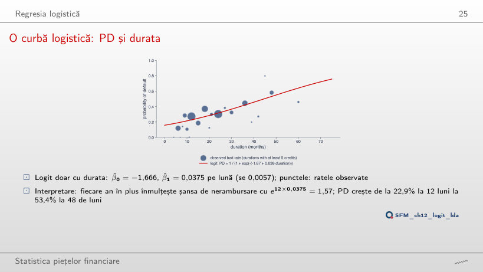
Răspuns
Cu e^(10 × (−0,0185)) = 0,83, adică −17%: PD scade de la 34,0% la 25 de ani la 21,3% la 60 de ani. Durata singură dă 1,57 pe an: solicitanții mai în vîrstă sînt mai siguri, creditele mai lungi mai riscante.
Un model logit mic pe eșantionul complet
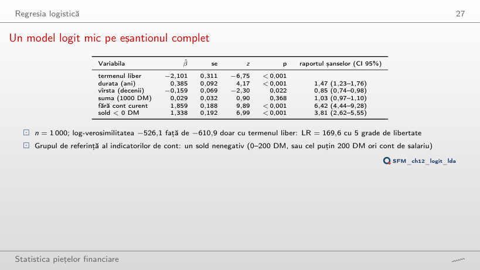
Coeficienții, eșantionul complet (1000 de credite)
Răspuns
Crește la 0,112 pe 1000 DM, p < 0,001: fără durată, suma preia riscul creditelor lungi, cu care este corelată. Un coeficient este efectul cu celelalte variabile fixate; omiterea unei variabile corelate îl schimbă.
Rapoartele șanselor cu intervale de încredere
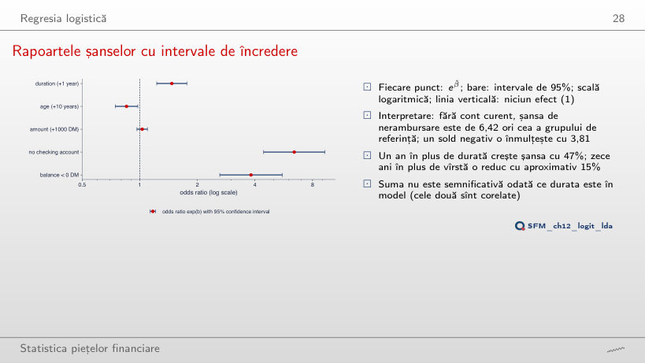
Răspuns
Da: 0,71–1,02. Efectul vîrstei are p = 0,022: semnificativ la 5%, nu și la 1%. Intervalele duratei și ale celor doi indicatori de cont exclud 1 și la 99%; suma conține 1 la orice nivel.
Exemplu rezolvat: PD a unui solicitant
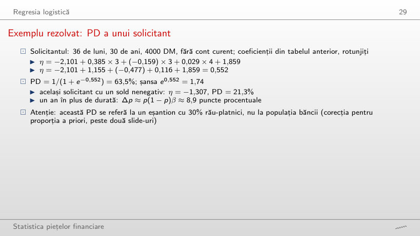
Exemplu lucrat: PD a unui solicitant (coeficienți rotunjiți)
Răspuns
71,8%: η crește cu 0,385, la 0,937. Aproximarea p(1 − p)β = 8,9 puncte de la 63,5% dă 72,4%, aproape, dar modificarea exactă, 8,3 puncte, este mai mică, pentru că curba logistică se aplatizează cînd p se îndepărtează de 0,5.
Scorecard-ul logit pe variabile WoE
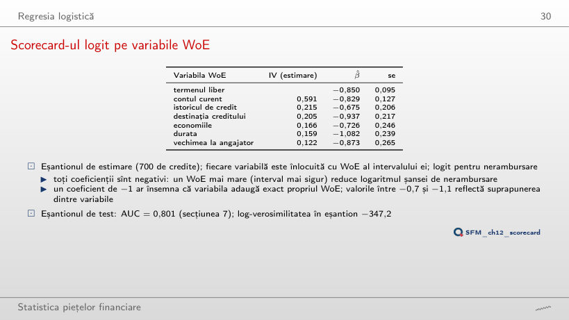
Scorecard-ul logit pe variabile WoE (eșantionul de estimare, 700 de credite)
Răspuns
Nu: scade de la 0,801 la 0,787, în timp ce AUC de estimare crește de la 0,789 la 0,825. Cele nouă variabile slabe se adaptează la zgomotul celor 700 de credite de estimare.
Corecția pentru suprareprezentarea rău-platnicilor
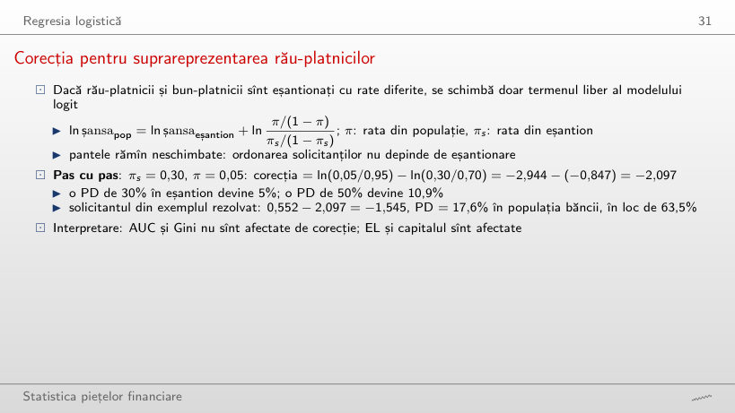
Exemplu lucrat: corecția a priori
Răspuns
3,9%: corecția este ln(0,01/0,99) − ln(0,3/0,7) = −3,748, deci η = 0,552 − 3,748 = −3,196. Se mută doar termenul liber; ordonarea solicitanților, deci și AUC, rămîne aceeași.
Analiza discriminantă liniară
Exemplu rezolvat: direcția Fisher cu două variabile
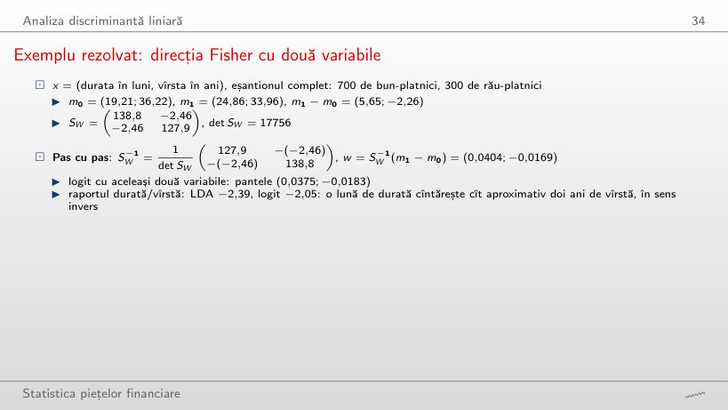
Exemplu lucrat: direcția Fisher
Răspuns
0,640, exact cît logit-ul cu aceleași două variabile. Scorecard-ul cu șase variabile WoE atinge 0,801 pe eșantionul de test: două variabile sînt departe de a fi suficiente, cum arată și norii care se suprapun.
Frontiera Fisher și frontiera logit
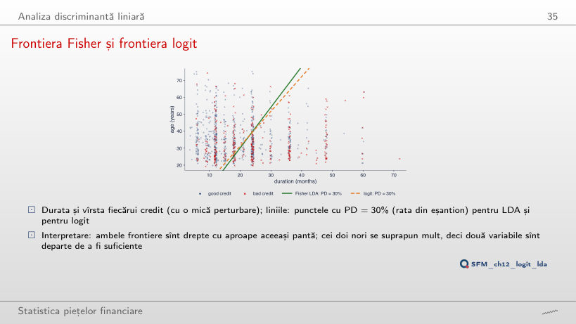
Răspuns
Se deplasează paralel spre durate mai lungi: la 30 de ani, de la aproximativ 20 de luni (19,9 LDA, 19,4 logit) la aproximativ 41 de luni (40,9 și 42,0). Panta nu depinde de nivelul PD; se schimbă doar termenul liber.
Logit sau LDA?
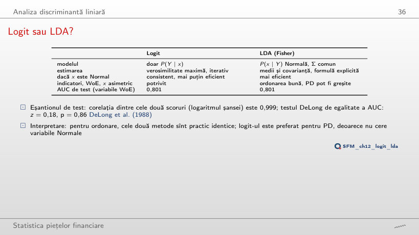
Logit și LDA pe aceleași șase variabile WoE
Răspuns
Nu, este puțin mai mic: 0,789 față de 0,790, DeLong z = −0,48, p = 0,63. Pe eșantionul de test, logit-ul este puțin înainte (0,8013 față de 0,8009, z = 0,18). Cele două scoruri au corelația 0,999; niciuna dintre ordonări nu este separată de zgomot de acest test.
De la model la scorecard
Exemplu rezolvat: scoruri și puncte
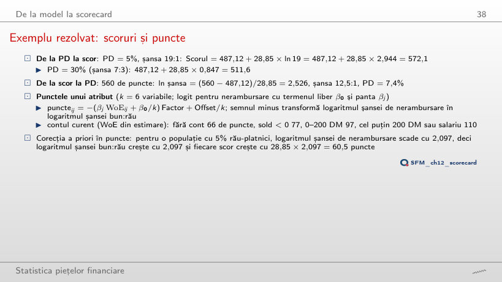
Exemplu lucrat: scoruri și puncte
Răspuns
544,2: Factor 57,71, Offset 374,25. Punctul de bază rămîne 600 la șansa 50:1; o PD de 5% înseamnă șansa 19:1, sub bază, iar cu o scală mai abruptă scorul coboară și mai mult sub 600.
Scorurile eșantionului de test
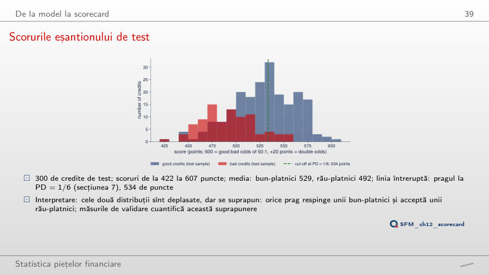
Răspuns
8 (FN): 82 din cei 90 de rău-platnici sînt respinși. Prețul: 112 din cei 210 bun-platnici sînt respinși. Cele două distribuții se suprapun, deci orice prag schimbă o eroare pe cealaltă.
Validarea
Două praguri pe eșantionul de test
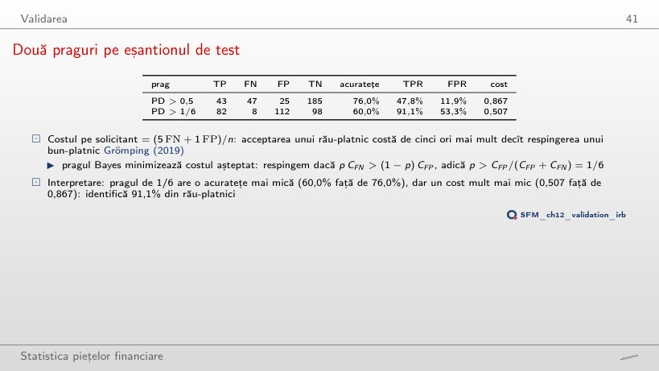
Matricile de confuzie pe eșantionul de test (ultimul rînd: pragul ales)
Exemplu lucrat: ratele la pragul ales
Răspuns
Acuratețea scade de la 76,0% la 72,7%, costul scade de la 0,867 la 0,527: TPR crește de la 47,8% la 78,9%, FPR de la 11,9% la 30,0%. Acuratețea cîntărește la fel cele două erori; costul cîntărește de cinci ori un rău-platnic acceptat.
Costul așteptat și alegerea pragului
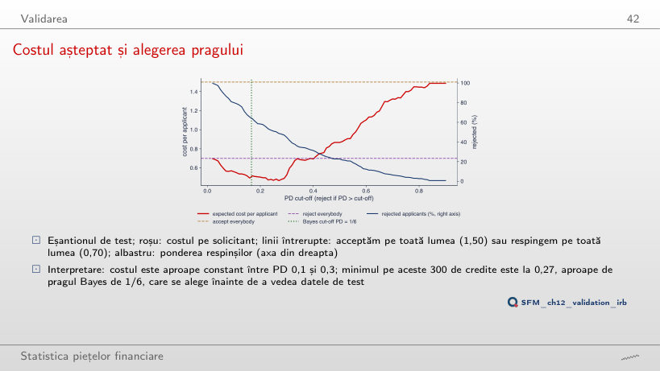
Răspuns
81%: pragul scade de la 1/6 la 1/11 = 0,091, iar ponderea respinșilor crește de la 64,7% la 81,0%; costul așteptat este 0,620, sub 0,700, costul respingerii tuturor.
Curba ROC și AUC
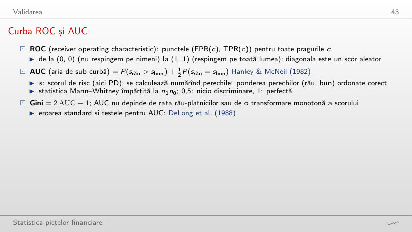
Exemplu lucrat: AUC ca probabilitate de ordonare
Răspuns
23,1% (4362 de perechi); fiecare contează 1/2, deci AUC = (11 579 + 2181)/18 900 = 0,728. Logit-ul WoE are doar 12 perechi egale (0,06%).
Curbele ROC pe eșantionul de test
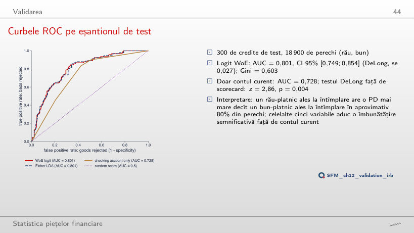
Răspuns
Sub: 0,789. Performanța în eșantion este de obicei optimistă, dar această împărțire a fost norocoasă: în cele 100 de părți ale validării încrucișate, AUC medie de test este 0,764.
Curba CAP, raportul de acuratețe și KS
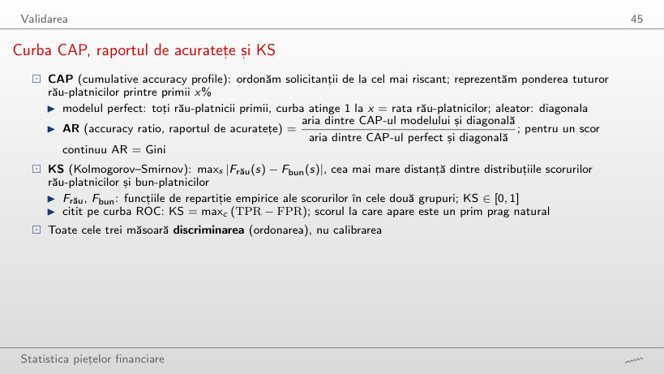
Exemplu lucrat: KS, Gini și AR
Răspuns
Nu: AR = 0,240. Cu doar patru valori ale scorului, CAP ordonează solicitanții cu același scor în ordinea din fișier, care este arbitrară; AR = Gini este valabil pentru un scor continuu (logit WoE: 0,602 și 0,603). KS este 0,410, față de 0,511.
CAP și KS pe eșantionul de test

Răspuns
60% (54 din 90). Modelul perfect i-ar identifica pe toți, deoarece 30% este exact rata rău-platnicilor; un scor aleator ar identifica 30%.
CAP și KS pe eșantionul de test
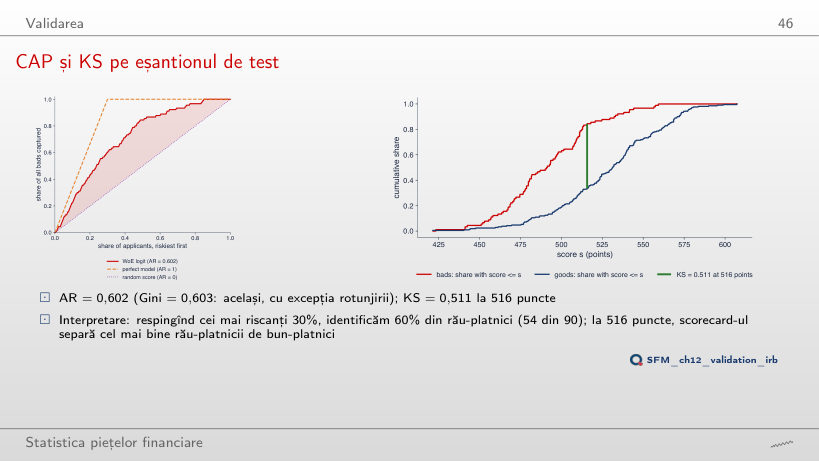
Răspuns
0,373: 91,1% din rău-platnici și 53,8% din bun-platnici au cel mult 534 de puncte. Aceasta este TPR − FPR la acest prag; KS este maximul ei peste toate pragurile. Pragul care minimizează costul așteptat nu este cel care maximizează KS, pentru că KS cîntărește la fel cele două erori.
Calibrarea și scorul Brier
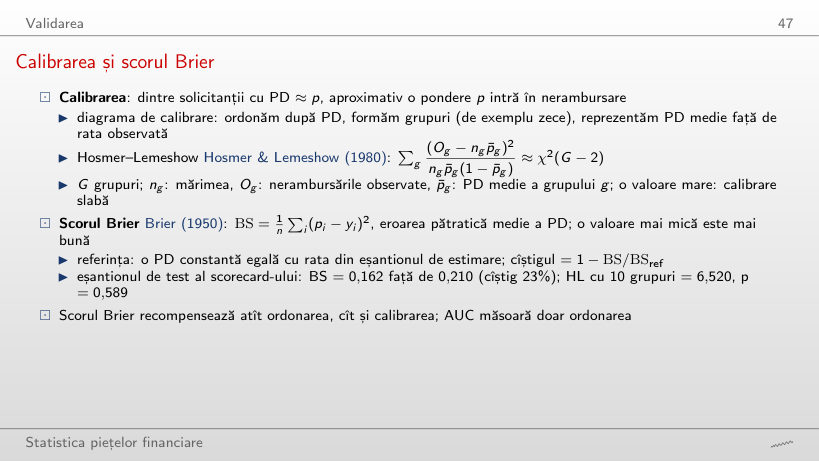
Exemplu lucrat: scorul Brier și testul Hosmer–Lemeshow
Tabelul de calibrare al scorecard-ului (eșantionul de test)
Răspuns
0,90 (HL = 0,589, 3 grade de libertate); 0,59 cu 10 grupuri, 0,82 cu 20. Nerespins în nicio grupare: cu 300 de credite testul are o putere mică, deci „nerespins” nu dovedește că PD sînt exacte.
Calibrarea pe datele din Taiwan
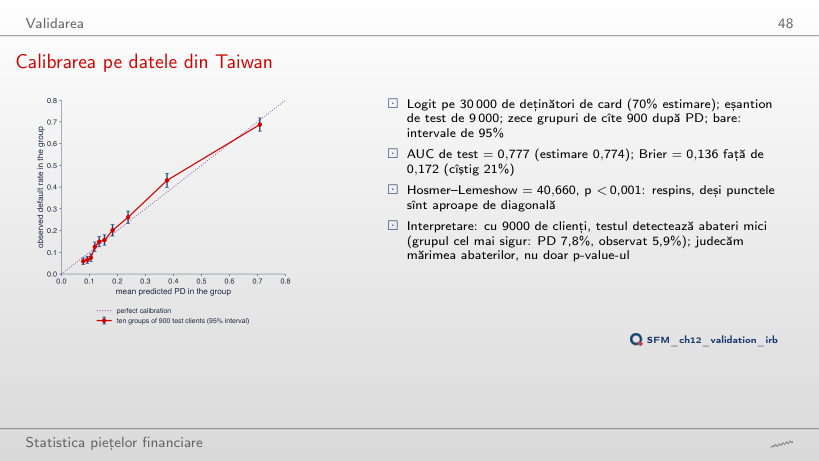
Tabelul de calibrare (cu roșu: termen HL peste 3,84)
Răspuns
Da: HL = 22,6 cu 3 grade de libertate, p < 0,001 (cu 20 de grupuri, 67,5, p < 0,001). Cu 9000 de clienți, testul detectează abateri de unul sau două puncte procentuale; contează mărimea abaterilor, nu doar p-value-ul.
AUC de estimare și de test în validarea încrucișată repetată
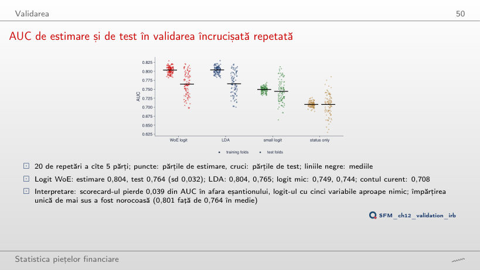
Răspuns
Foarte puțin: 0,766; 0,767; 0,766; 0,764. O singură rulare cu 5 părți face deja media a cinci părți de test; împărțirea unică din curs (0,801) este o singură extragere dintr-o distribuție cu abaterea standard 0,032.
Reject inference și echitatea
Un experiment de reject inference pe datele din Taiwan
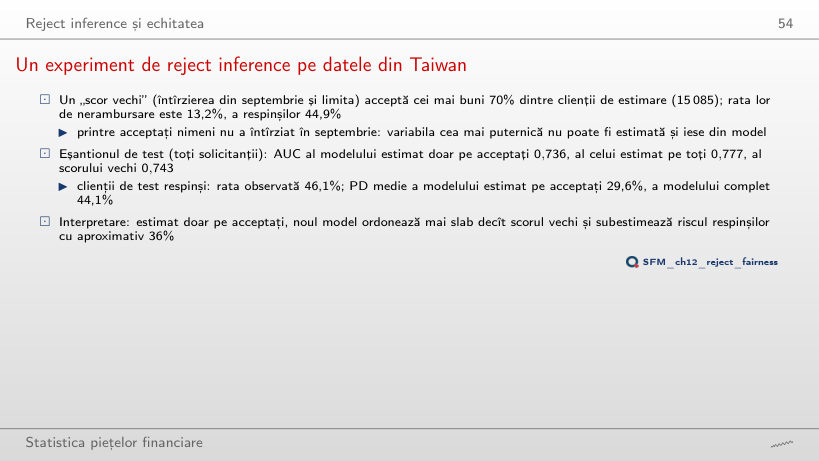
Experimentul de reject inference (eșantionul de test, 9000 de clienți)
Răspuns
Nu, acum îl supraestimează: PD medie 80,0% față de 69,4% observat, iar AUC pe toți solicitanții (0,777) este cel al modelului complet. La 90%, printre acceptați sînt și clienți care au întîrziat în septembrie, deci nicio variabilă nu iese din model; cei 10% respinși se află dincolo de datele de estimare, iar logit-ul extrapolează.
Aprobarea și nerambursarea pe grupuri: Taiwan
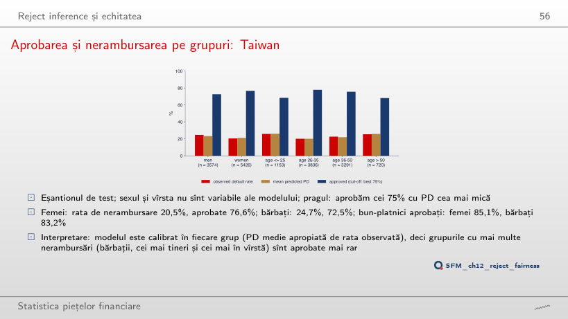
Răspuns
Scade de la 4,1 la 2,2 puncte procentuale (90,9% față de 88,7%). Ordinea grupurilor rămîne aceeași, pentru că modelul este calibrat în fiecare grup, iar bărbații intră mai des în nerambursare (24,7% față de 20,5%).
Nerambursarea companiilor: Altman și Merton
Exemplu rezolvat: un scor Z
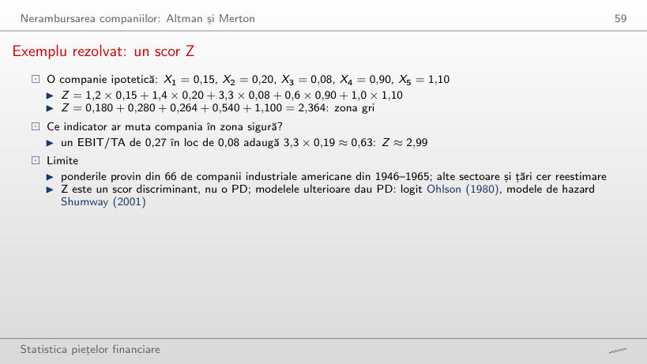
Exemplu lucrat: scorul Z
Răspuns
Peste 0,27 (exact 0,2697): ceilalți patru termeni dau 2,100, iar 3,3 X₃ trebuie să adauge 0,890. EBIT/TA are cea mai mare pondere, 3,3, deci profitabilitatea mișcă cel mai mult scorul Z.
Exemplu rezolvat: distanța pînă la nerambursare
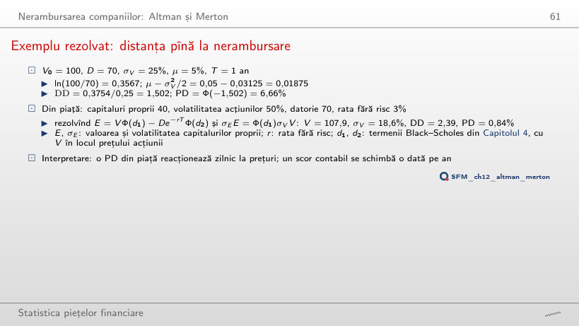
Exemplu lucrat: distanța pînă la nerambursare
Răspuns
20,7%: DD scade la (0,3567 + 0,05 − 0,08)/0,40 = 0,817. Volatilitatea intră de două ori: micșorează termenul de creștere și împarte distanța.
Merton: traiectoriile activelor și PD
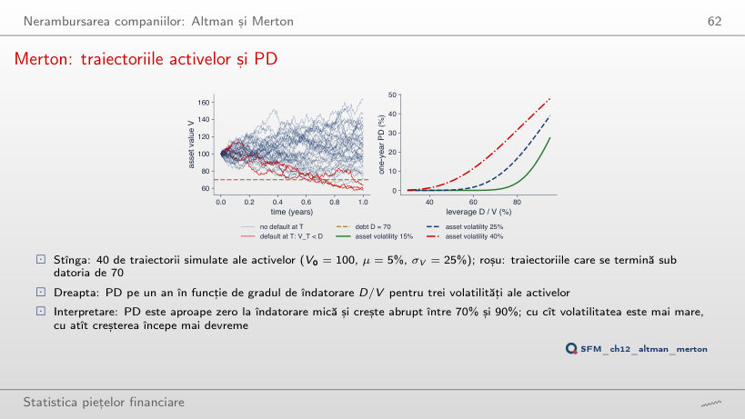
Răspuns
8 din 40, față de 3 la 25% și niciuna la 15%; PD a modelului la D/V = 70% este 20,7%, 6,66% și 0,42%. Cu 40 de traiectorii, numărătorile sînt zgomotoase: 8/40 = 20%.
South German Credit (Grömping, 2019; UCI, doi:10.24432/C5QG88): 1000 de credite de consum din 1973–1975, 300 neperformante; împărțirea stratificată 700/300 (sămînța 2026). Cardurile de credit din Taiwan (Yeh și Lien, 2009; UCI, doi:10.24432/C55S3H): 30 000 de clienți, eșantion de test de 9000. Ambele seturi sînt salvate în data/credit. Browserul calculează din înregistrările South German Credit tabelele WoE, IV, modelele logit și LDA, scorecard-ul, matricile de confuzie, ROC, AUC, DeLong, Gini, CAP, KS, Brier și Hosmer–Lemeshow; din PD, rezultatul, sexul și vîrsta celor 9000 de clienți de test din Taiwan, calibrarea și echitatea. AUC din cele 100 de părți ale validării încrucișate, traiectoriile Merton (sămînța 2026) și experimentul de reject inference vin din codul din curs. Alte variabile, alte eșantioane, praguri, costuri, niveluri de încredere, ponderi de aprobare și acceptare (50, 60, 80 și 90%) sînt rulări suplimentare ale aceluiași cod.